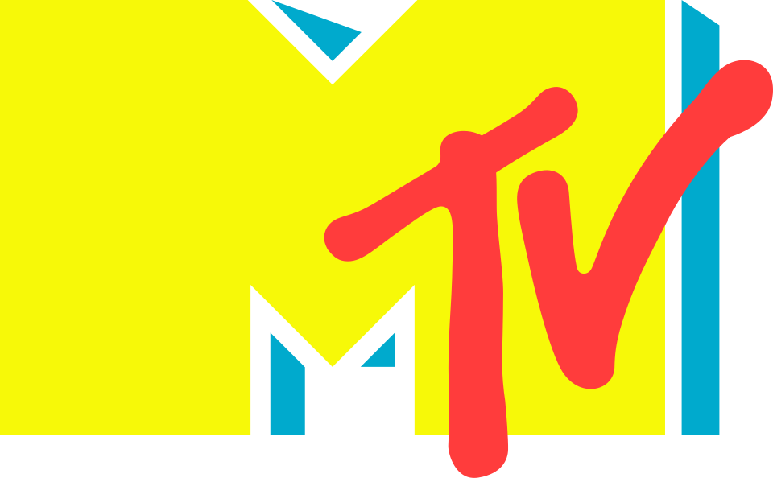

MTV
MTV(MTV)는 1981년 개국한 미국의 음악 전문 케이블TV 채널이다. VJ가 뮤직비디오를 소개·방영하는 새로운 진행 형식을 도입하며 시작했다.
최종 업데이트

MTV는 어떤 브랜드인가
MTV는 뮤직비디오를 전문으로 방영하기 위해 설립된 미국의 케이블TV 채널이다. 현재는 한정된 범위의 뮤직비디오만 방영하며, 그보다 우선적으로 10대와 젊은 층을 시청 타깃으로 대중문화 관련 프로그램과 리얼리티 프로그램을 중점적으로 방송한다.
첫 방송 이후 MTV는 음악산업과 대중문화에 큰 영향을 주었으며, VJ 개념을 대중화하고 음악 관련 행사와 소식을 팬과 아티스트가 공유할 수 있는 공간을 제공했다. 반면 수년간 검열제도와 사회행동주의 등 젊은이들에게 미치는 윤리적 영향에 대한 논란도 꾸준히 이어졌으며, 90년대부터는 비음악 프로그램 중심 편성이 대중문화에 부정적 영향을 줄 것이라는 논쟁도 일었다.
미국 내 여러 자회사와 해외 합작회사를 두고 있으며 VH1, MTV2, MTV Tr3s 등 자매 채널이 있다.
MTV는 어떻게 시작되고 성장했나
MTV의 탄생은 1977년 워너 케이블이 오하이오주 콜럼버스에서 쌍방향 TV 시스템 QUBE를 개설하면서 시작됐다. QUBE는 음악방송 채널 Sight on Sound를 포함해 여러 전문 채널을 제공했고, 시청자가 좋아하는 아티스트나 곡에 투표할 수 있는 서비스를 갖췄다.
MTV의 근본적인 프로그램 형태는 당시 영상매체담당자였던 로버트 W. 피트먼이 만들었으며, 그는 1970년대 후반 WNBC에서 자신이 제작·진행한 1분짜리 프로그램 'Album Tracks'를 시범 방송한 바 있다.
이러한 과정을 거쳐 MTV는 1981년 8월 1일 존 랙의 목소리로 첫 방송을 시작했다.
MTV의 브랜드 아이덴티티는 무엇인가
VJ가 뮤직비디오를 소개하는 진행 형식을 대중화한 최초의 음악 전문 케이블TV 채널이라는 점에서 다른 방송사와 구분된다.
MTV의 대표 제품과 서비스는 무엇인가
MTV의 원래 목적은 VJ가 진행하며 매일 24시간 동안 뮤직비디오를 방영하는 '음악 텔레비전'이 되는 것이었다. 이러한 24시간 뮤직비디오 방송 체계는 이후 바뀌었지만, MTV는 지금도 TV 채널과 웹사이트에서 한정된 범위의 뮤직비디오를 방영하고 있다.
현재는 뮤직비디오 방영보다 10대와 젊은 층을 겨냥한 대중문화 프로그램과 리얼리티 프로그램을 중점적으로 편성한다. 주요 자매 채널로는 VH1, MTV2, MTV Tr3s 등이 있다.
MTV는 지금 어떤 상태인가
MTV는 모기업인 MTV 네트웍스 산하에 있으며 본사는 뉴욕에 있다. 미국 내에 많은 자회사를 두고 있고 외국에도 다양한 합작회사를 운영하고 있으며, VH1, MTV2, MTV Tr3s 등의 자매 채널을 통해 사업을 확장해왔다.
MTV 로고는 어떻게 변해왔나
자주 묻는 질문
MTV는 어느 나라 브랜드인가요?
MTV는 미국의 미디어·엔터테인먼트 브랜드입니다.
MTV는 언제 설립되었나요?
MTV는 1981년 설립되었습니다.
MTV의 브랜드 아이덴티티는 무엇인가요?
VJ가 뮤직비디오를 소개하는 진행 형식을 대중화한 최초의 음악 전문 케이블TV 채널이라는 점에서 다른 방송사와 구분된다.
MTV의 대표 제품은 무엇인가요?
MTV의 원래 목적은 VJ가 진행하며 매일 24시간 동안 뮤직비디오를 방영하는 '음악 텔레비전'이 되는 것이었다.
MTV는 어느 기업이 소유하고 있나요?
MTV는 모기업인 MTV 네트웍스 산하에 있으며 본사는 뉴욕에 있다.
MTV의 창업자는 누구인가요?
MTV의 창업자는 Tom Freston, Judy McGrath, 로버트 피트먼입니다(위키데이터 기준).
MTV의 본사는 어디에 있나요?
MTV의 본사는 뉴욕에 있습니다(위키데이터 기준).
출처와 검증
MTV 관련 참고: 공식 웹사이트 · 위키데이터 Q43359 · 한국어 위키백과 · 영어 위키백과. 브랜드명은 한글과 원어를 함께 표기하되 데이터에 없는 표기는 만들지 않습니다. 기원 국가·설립연도는 검수된 정의문에서 확인된 값을 우선하고, 없을 때만 공식 웹사이트 URL이 일치하는 위키데이터 개체의 값을 씁니다. 위키데이터 값은 2026-09-26 기준입니다.